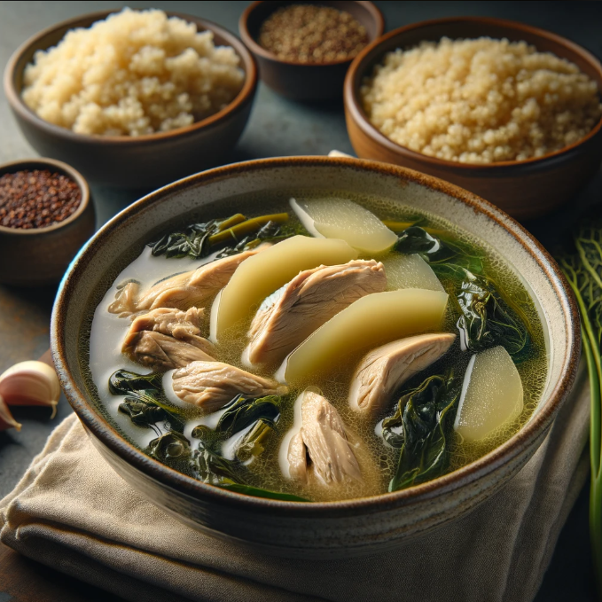

Chicken Tinola with Quinoa
Ingredients
- 1 whole chicken, cut into serving pieces
- 1 tablespoon cooking oil (vegetable or olive oil)
- 1 onion, sliced
- 3 cloves garlic, minced
- 1 thumb-sized ginger, julienned
- 2 cups water
- 1 cup chicken broth
- 1 medium green papaya or chayote squash, peeled and sliced into wedges
- 2 cups spinach leaves
- 1 tablespoon fish sauce (patis)
- Salt and pepper to taste
- 1 cup quinoa
- 2 cups water or chicken broth for cooking quinoa
| Nutrition Facts |
| Calories |
344 kcal |
| Fat |
21g |
| Carbs |
14g |
| Protein |
27g |
Meal Procedure
- Prepare the Chicken: In a large pot, heat the cooking oil over medium heat.
- Add the sliced onion and cook until translucent.
- Add minced garlic and julienned ginger, sautéing until fragrant.
- Cook the Chicken: Add the chicken pieces to the pot and cook until lightly browned on all sides.
- Pour in the water and chicken broth. Bring to a boil, then reduce heat to simmer.
- Simmer the Soup: Let the chicken simmer for about 15-20 minutes until it's almost cooked through.
- Skim off any foam or impurities that rise to the surface.
- Add Vegetables: Add the sliced green papaya or chayote squash to the pot and cook until they're tender, about 5-7 minutes.
- Once the vegetables are tender, add the spinach leaves and cook until wilted.
- Season the Soup: Season the Chicken Tinola with fish sauce (patis), salt, and pepper to taste. Adjust the seasoning according to your preference.
- Prepare Quinoa: Rinse the quinoa under cold water. In a separate pot, combine the quinoa with water or chicken broth (use a 1:2 ratio of quinoa to liquid). Bring to a boil, then reduce the heat to low, cover, and simmer for about 15-20 minutes, or until the quinoa is tender and the liquid is
- Prepare Quinoa: Rinse the quinoa under cold water.
- In a separate pot, combine the quinoa with water or chicken broth (use a 1:2 ratio of quinoa to liquid).
- Bring to a boil, then reduce the heat to low, cover, and simmer for about 15-20 minutes, or until the quinoa is tender and the liquid is absorbed.
Tips:
- You can use any part of the chicken for this recipe, such as thighs, drumsticks, or breast pieces.
- Feel free to add other vegetables like green beans or bok choy to the Chicken Tinola for extra flavor and nutrition.
- Garnish the soup with chopped green onions or cilantro before serving for added freshness.
- Quinoa is a nutritious whole grain that complements the Chicken Tinola well. It's high in protein, fiber, and various vitamins and minerals.